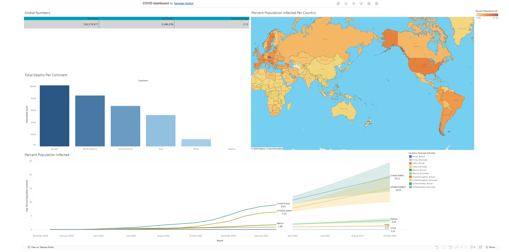

In the first phase of the project, our focus is on transforming raw worldwide
layoffs data into a structured format suitable for analysis, utilizing MySQL techniques to ensure data integrity and accuracy. This initial step prepares the data for insightful reporting and visualization. Moving into the second phase, we conduct exploratory data analysis (EDA) using MySQL on the cleaned dataset. Here, our aim is to delve deeply into the data, uncovering patterns, trends, and valuable insights that can inform subsequent decision-making and strategic directions.

In this project, we conduct a comprehensive exploration of Data Science job salaries using MySQL. This analysis serves as a foundation for further visualization with advanced data visualization tools.

Building on the insights gained from the MySQL exploration, we created an interactive dashboard using Tableau to visualize the data science jobs salary data. This Tableau dashboard brings the data to life, providing stakeholders with a powerful tool to understand salary trends and make informed decisions in the data science field.

Developed an interactive Coffee Sales Dashboard in Excel utilizing advanced
features such as Pivot Tables, Timelines, and Slicers for dynamic data
visualization and analysis. Implemented various Excel functions including
XLOOKUP, INDEX MATCH, and multiple IF statements to handle complex data
retrieval and calculations.

This interactive dashboard provides a comprehensive overview of the COVID-19 pandemic on a global scale. Explore key metrics like: Total Confirmed Cases, Interactive World Map, Predictive Trends.